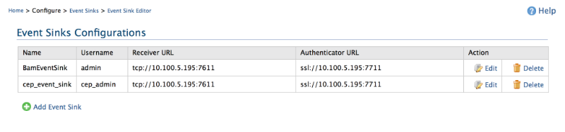
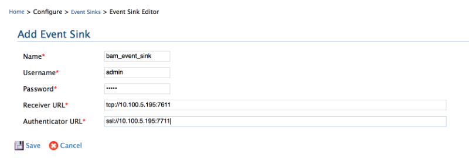

Configuring Event Sinks
Event sinks contain information about transport endpoints provided by other systems. Events can be published to these endpoints.
Endpoint transport and authentication URLs and credentials are captured in event sinks.
- To go to the configuration of Event Sinks go to ESB management console Configure→Event
Sinks
menu.
- If there are no existing Event Sinks (in the very first time) click Add
Event Sink to
add a new Event Sink.
- New event sinks can be added by clicking Add Event Sink button. Already existing event sinks
can be modified by clicking on their Edit link. If
there are unnecessary Event Sink they can be deleted by clicking on their
delete
link.

Figure1: Event Sink management UI
Creating a new event sink
